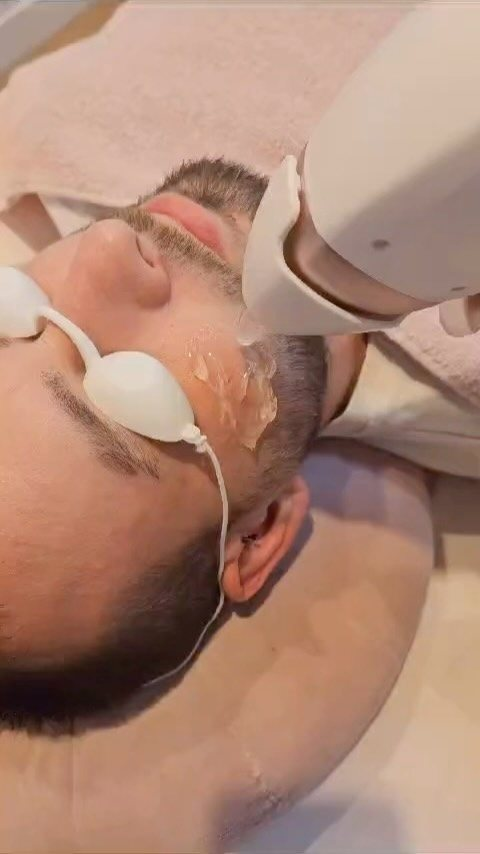
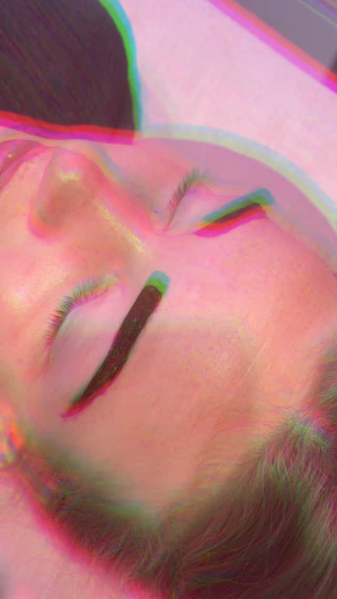
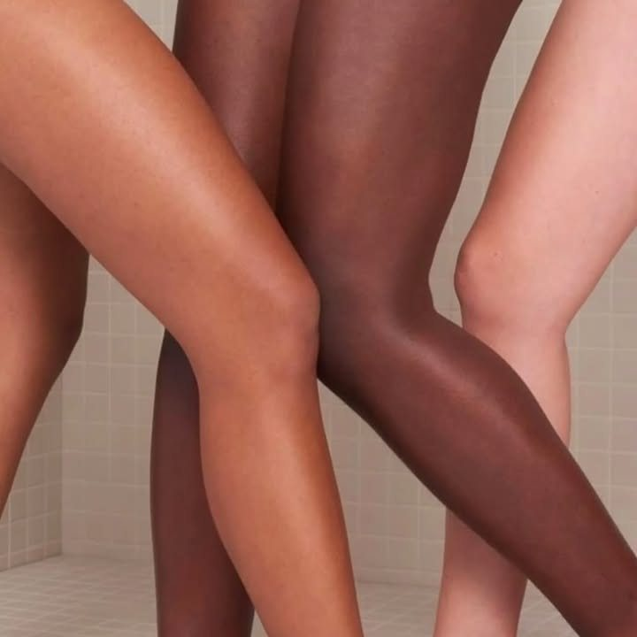

Waxen & laseren · Hoog Catharijne, Utrecht
De eerste keer is het spannendste. Daarna niet meer.
Er is hier een aparte prijs voor je eerste brazilian, omdat bijna iedereen die zenuwachtig binnenkomt. Prisje kletst, het gaat snel, en je bent er sneller uit dan je denkt.
Openingstijden laden
Voor je komt
Wat er gebeurt als je binnenkomt
De salon zit in Gallery Salon Studios, midden in Hoog Catharijne. Je hoeft niemand aan te spreken en nergens te wachten waar mensen langslopen.
Bij de zuil
Er staat een incheckzuil bij binnenkomst. Je voert je naam in, de deur gaat open en je neemt plaats in de wachtruimte.
Even zitten
Je krijgt een gratis drankje, alcoholvrij. Er is wifi, en kinderen mogen mee.
Het gesprek
Prisje legt eerst uit wat ze gaat doen. Bij een eerste keer neemt ze daar extra tijd voor.
En dan snel
Een brazilian staat op dertig minuten in de agenda. De meeste mensen zeggen achteraf dat het meeviel.
Twee manieren
Voor even weg, of voor weg blijven
Waxen haalt het haar met wortel en al weg en dat houdt weken. Laseren pakt de haarwortel zelf aan, en na een reeks behandelingen groeit er steeds minder terug.
Waxen
Elf behandelingen voor vrouwen en acht voor mannen. Er is vegan wax en sinds april ook parfumvrije wax, voor wie op parfum reageert.
Eerste keer brazilian € 44 in plaats van € 50. Brazilian € 46, hollywood € 47, basis bikini € 28.
Laseren
Drieentwintig behandelgebieden, van wenkbrauwen van € 25 tot het hele lichaam. Er wordt uitsluitend gewerkt met de diode platina triplewave pro.
De intake en een proefbehandeling zijn gratis. Zo weet je hoe het voelt voordat je aan een reeks begint.
Wat klanten schrijven
990 keer een cijfer, en waar dat vandaan komt
Cijfers per behandeling, zoals klanten ze zelf gaven. Prisje heeft daarnaast een eigen score: 5,0 uit 254 beoordelingen.
Was mijn eerste keer waxen, ik heb me echter geen enkel moment oncomfortabel gevoeld bij haar.
Rianne · brazilian
Een hele fijne en snelle ervaring voor een pijnlijke behandeling.
Jetske · brazilian
Handig gelegen, stijlvol en schoon interieur, en bovendien een heel vriendelijke en vakkundige behandelaar.
Lisa · hollywood
Zoals altijd top en gezellig. We kletsen even bij over het leven.
Marrit
Het wordt goed uitgelegd, snel en kundig uitgevoerd en veel gekletst waardoor je niet meer bezig bent met enige spanning.
Rianne · over haar eerste keer
In de behandelkamer
Waar het gebeurt



Doordeweeks tot half negen open
Maandag tot kwart over acht, vrijdag tot half negen. Handig als je overdag werkt en het station toch al passeert.